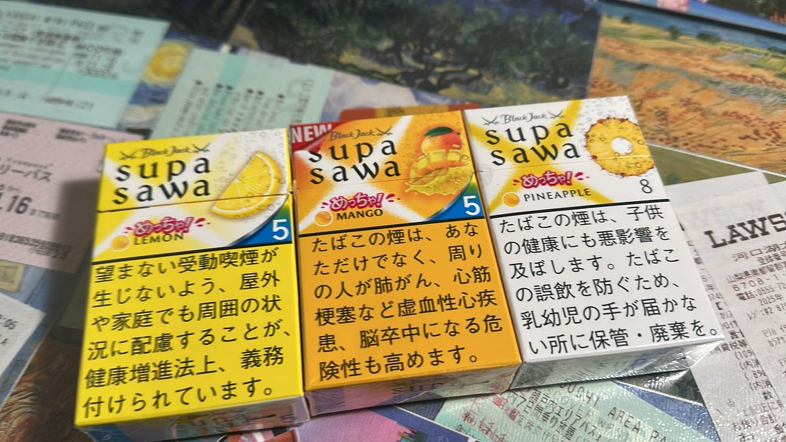
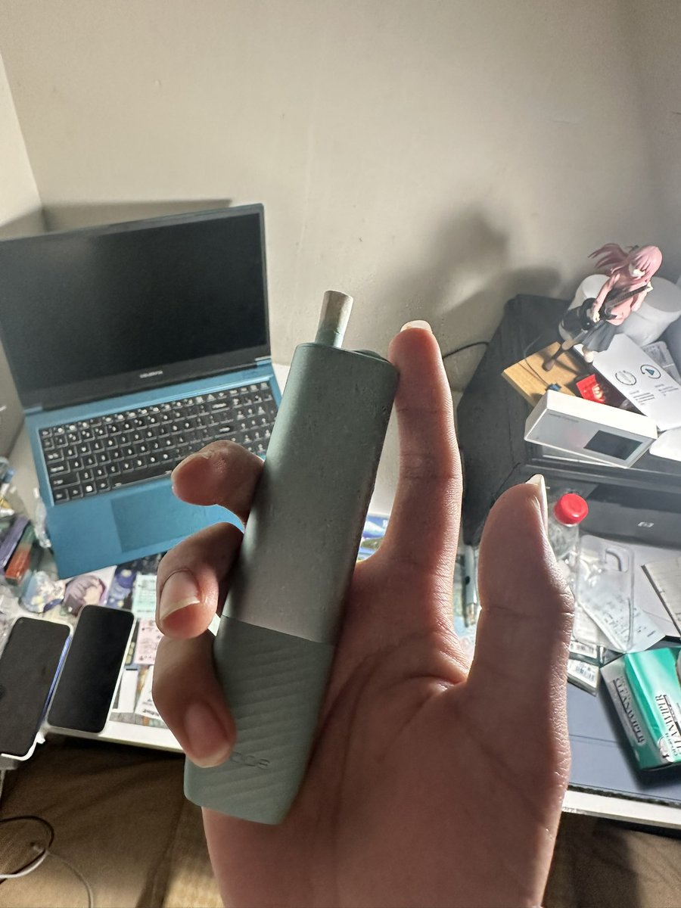

我平时只抽电子烟 偶尔抽Mevius 爱喜和中南海蓝莓
感觉以上三款都比这个柔和，不呛人
可能这个东西只适合想健康一点的老烟枪
日本烟目前感觉普遍更呛人 不柔和，除了mevius可以接受，supasawa我也觉得有点呛，让我想起来第一次抽和平那种老头烟的感觉。

感觉以上三款都比这个柔和，不呛人
可能这个东西只适合想健康一点的老烟枪
日本烟目前感觉普遍更呛人 不柔和，除了mevius可以接受，supasawa我也觉得有点呛，让我想起来第一次抽和平那种老头烟的感觉。


日本人搞的加热式香烟
里面就是烟草和一个铁片 通过铁片加热 没有明火 焦油量只有一般香烟的10%，所以会健康一点
但我感觉比很多香烟还要呛，不够柔和
事实也是，一抽空气净化器就响了
还是喜欢电子烟一点
两种烟弹 一个有爆珠一个没有 实际上都是一点果味都抽不出来，不喜欢 https://t.co/jyeFlBmpYI
里面就是烟草和一个铁片 通过铁片加热 没有明火 焦油量只有一般香烟的10%，所以会健康一点
但我感觉比很多香烟还要呛，不够柔和
事实也是，一抽空气净化器就响了
还是喜欢电子烟一点
两种烟弹 一个有爆珠一个没有 实际上都是一点果味都抽不出来，不喜欢 https://t.co/jyeFlBmpYI